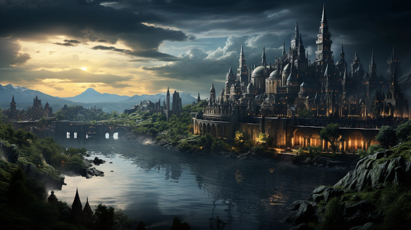

Figure 1: City of Gathen’dor, the capital of Dathakhian Empire
Nestled in the shadowy embrace of the towering Ithilnar Mountains lies Gathen’dor, the enigmatic capital of the Dathakhian Empire, home to the Durashim, the dark aelves of Naurrnen. Surrounded by the stark beauty of craggy peaks, this city is a marvel of dark architecture and arcane power. Its buildings, sculpted from the rare obsidianite stone, gleam like dark jewels under the twilight of a perpetually dim sky, reflecting the Durashim’s mastery over both the mystical and the material.
The city’s heart is the formidable Tower of Gurth, a spire that pierces the heavens, named after the god of the underworld. It is both a temple and a beacon of power, where the high priests and sorcerers commune with deities and weave their formidable magic. The streets of Gathen’dor are a labyrinth of secrets, with shadowy alleys and bustling marketplaces where one can find enchanted artifacts and ingredients for the most obscure of rituals.
Despite its austere grandeur, Gathen’dor is not a place of oppression but one of scholarly pursuit and cultural richness. The city’s academies and libraries are renowned throughout the realms, holding the ancient knowledge of the Amearans and the collected wisdom of the ages.
Yet, for all its splendor, Gathen’dor is not without peril. Political intrigue and power struggles are as much a part of life here as the ancient stone beneath their feet. To walk its streets is to walk alongside history, mystery, and the ever-present whisper of the arcane.